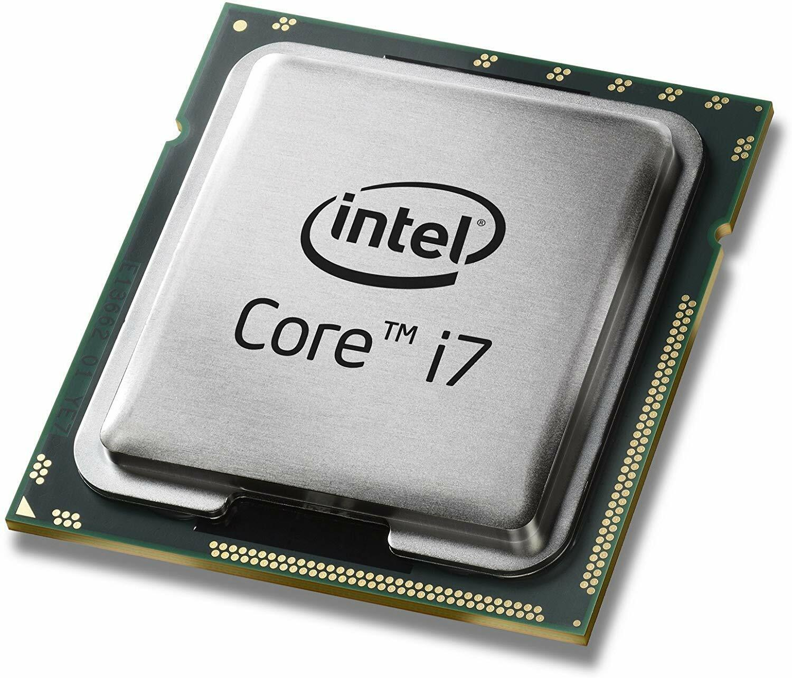

Компьютер состоит из внутренних компонентов, определяющие его быстродействие
Содержание (Состоит из набора ссылок внутри самой страницы);- Центральный процессор
- Использование микропроцессоров
- Как устроен процессор
- Разрядность процессора
- Тактовая частота процессора
- Количество ядер процессора
- Коэффициент внутреннего множителя частоты
- Кеш-память процессора
- Оперативная память
- Видеокарта
- Жесткий диск
- Материнская плата
Что такое центральный процессор
Для краткого обозначения центрально процессора принята аббревиатура — ЦП, а также очень распространено CPU - Central Processing Unit, что переводится как центральное обрабатывающее устройство
Использование микропроцессоров
Так и в персональном компьютере, да и всей компьютерной системе центральный процессор не является единственным. Видеоплата является ярким представителем устройства имеющего свой собственный микрочип процессора GPU (Graphics Processing Unit) – графический процессор
Как устроен процессор
В основе внутренних схем процессора лежит арифметико-логическое устройство, внутренняя память (регистры), и кеш-память (сверх память), которые в свою очередь образуют ядро процессора, а также схемы для управления всеми операциями и схемы управления с внешними устройствами – шинами.
Разрядность процессора
Входная информация представленная данными и командами в процессор попадает через внешние шины. Обработка данных происходит в соответствие с командами в арифметико-логическом устройстве, а результат выводится при помощи устройств вывода. Чем больше разрядность всех схем процессора, тем большее количество информации возможно ему обработать за единицу времени. Делая вывод можно понять, что от разрядности центрального процессора на прямую зависит производительности компьютерной системы в целом.Хорошим примером станет один из первых микропроцессоров для IBM PC 80286, которые были 16 разрядными. Следующая же модель процессора стала уже 32 разрядной, а 64 разрядные процессоры для ПК появились в 2014 году. Данная разрядность и по сей день остаётся основной разрядностью и используется в производстве в современных процессорах.